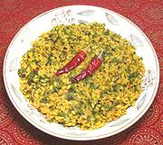

|
Spinach Stem Stir FryIndia - South | ||||
| Serves: Effort: Sched: DoAhead: |
2 w/rice ** 45 min Yes |
What to do with the stems from your spinach leaves? Here is one of the most wonderfully balanced Indian dishes I know, and it wants those sweet stems! | |||
|
6 1/2 1-1/2 ------ 1/2 1/4 1/4 1/4 1 6 1/2 ------- 1/8 1/2 1/3 3/4 |
oz c c --- t t t t T --- t t t c |
Spinach Stems (1) Moong Dal (2) Water -- Spicing Mustard Seeds (3) Cumin Seeds Chana Dal (4) Urad Dal (5) Chili red dry (6) Curry Leaves (7) Oil ---------- Turmeric Chili powder (8) Salt Water |
PREP - (30 min - 10 min work)
|